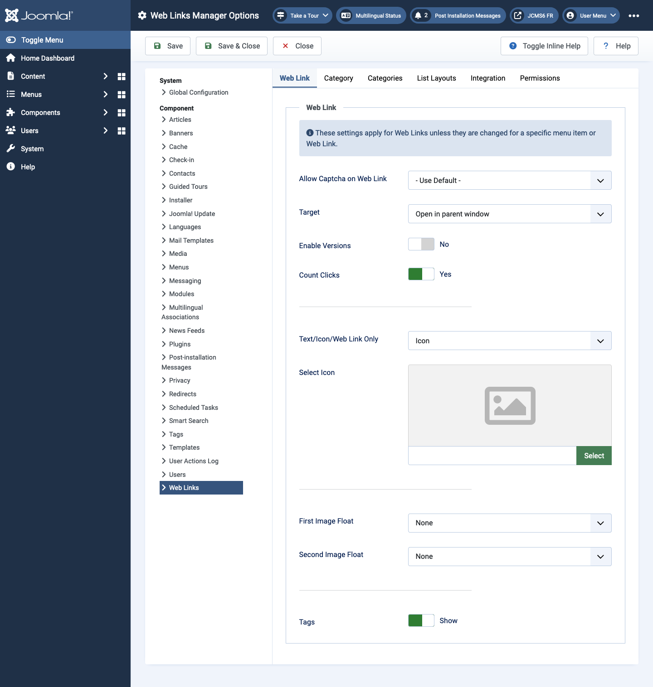

Joomla Help Screens
Web Links Options
Description
Web Links Options configuration allows setting of parameters used globally for all web link menu items.
Common Elements
Some elements of this page are covered in separate Help articles:
How to Access
- Select Components -> Weblinks -> Links from the Administrator menu. Then...
- Select the Options Toolbar button.
Screenshot

Web Link Tab
- Allow Captcha on Web Link Select the captcha pugin that will be used in the web link submit form. You may need to enter required information for your captcha plugin in the Plugin Manager. If 'Use Default' is selected, make sure a captcha plugin is selected in Global Configuration.
- Target Target browser window when the link is selected.
- Count Clicks If Yes, the number of times the link has been clicked will be recorded.
- Text/Icon/Web Link Only Shows a text, icon, or nothing with the Web Link. Default is Icon.
- Select Icon This allows you to select an image file to use as the default icon for web links. When you click on the Select button, a modal window opens that allows you to browse through the image files on your site.
- Image Float Where to display the image on the page.
- Show Tags Show or hide the feed's tags.
Category Tab
Category Options control how web links will show when you drill down to a web links to view its links.
- Choose a layout Select the default layout to show when you click on a Category link. If you create an alternative layout for a category layout, you may select that as the default.
- Category Title Show or hide the title of the category.
- Category Description Show or hide the description for the category.
- Category Image Show or hide the category image.
- Subcategory Levels How many levels of subcategories to show when showing a category view.
- Empty Categories Show or hide categories that don't contain any items or subcategories.
- Subcategories Descriptions Show or hide the descriptions for subcategories that are shown.
- # Web Links Show or Hide the number of web links in each category.
- Show Tags Show or Hide the tags for a single category.
Categories Tab
These settings apply for Web Links Categories Options unless they are changed for a specific menu item.
- Top Level Category Description Show or hide the description of the top-level category.
- Subcategory Levels How many levels in the hierarchy to show.
- Empty Categories Show or hide categories that contain no items and no subcategories.
- Subcategories Descriptions Show or hide the description of each subcategory.
- # Web Links Show or Hide the number of web links in each category.
List Layouts Tab
These settings apply for Web links List Options unless they are changed for a specific menu item.
- Filter Field The Filter Field creates a text field where a user
can enter a value to be used to filter the web links shown in the list.
- Hide: Don't show a filter field.
- Title: Filter on web link title.
- Author: Filter on the author's name.
- Hits: Filter on the number of web links hits.
- Display Select Show or hide the Display # control that allows the user to select the number of items to show in the list.
- Table Headings Show or hide a heading above the table of web links.
- Links description Show or hide the description of the web link.
- Hits Hide or show the number of times this web link has been accessed.
Integration Tab
These settings determine how the Web links Component will integrate with other extensions.
- RSS Feed Link Show or hide the feed links URLs. A feed link will show up as a feed icon in the address bar of most browsers.
- Remove IDs from URLs Yes or No.
- Edit Custom Fields Yes or No.
Tips
- If you are a beginning user, you can just keep the default values here until you learn more about using global options.
- If you are an advanced user, you can save time by creating good default values here. When you set up menu items and create web links, you will be able to accept the default values for most options.
- All values set here can be overridden at the menu item, category, or web link level.